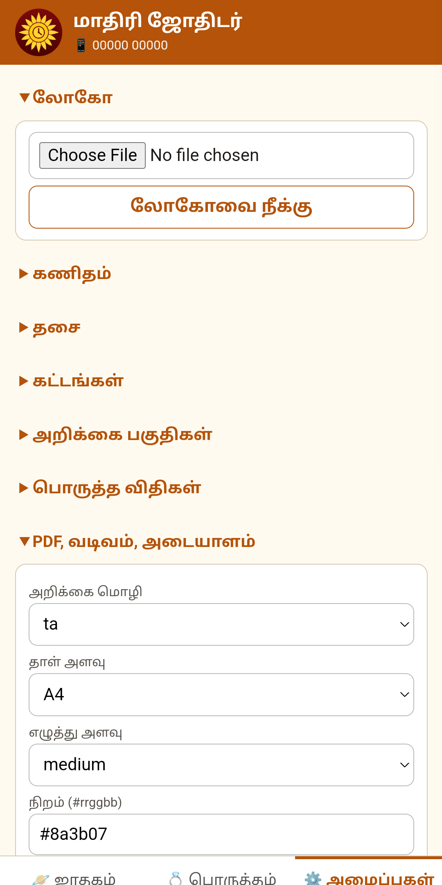

Kaniyanகணியன்
Free jathagam and porutham for every astrologer. Open it in your browser, add your own name and logo, and hand clients a professional PDF. ஒவ்வொரு ஜோதிடருக்கும் இலவச ஜாதகம் மற்றும் பொருத்தம். உலாவியில் திறந்து, உங்கள் பெயர், லோகோவுடன் PDF அறிக்கை கொடுக்கலாம்.
Making astrology freeஜோதிடத்தை இலவசமாக்குவோம்
Good astrology software is expensive, and many astrologers, especially those just starting out, cannot afford it. Kaniyan is an initiative to free astrologers from costly software, so skill and knowledge decide who succeeds, not who can pay for a licence. நல்ல ஜோதிட மென்பொருள் விலை உயர்ந்தது; புதிதாகத் தொடங்கும் பல ஜோதிடர்களால் அதை வாங்க முடிவதில்லை. செலவு மிக்க மென்பொருளிலிருந்து ஜோதிடர்களை விடுவிக்கும் முயற்சி கணியன். உரிமத்துக்குப் பணம் கொடுக்க முடிந்தவர் அல்ல, திறமையும் அறிவும் உள்ளவரே வெல்ல வேண்டும்.
Everything is open and free to use, forever. எல்லாமே திறந்தவை; எப்போதும் இலவசம்.
What you getஎன்ன கிடைக்கும்
Jathagamஜாதகம்
Rasi and navamsa charts, planet positions and dasa periods, calculated with the Swiss Ephemeris.ராசி, நவாம்சக் கட்டங்கள், கிரக நிலைகள், தசா புக்தி – Swiss Ephemeris கணக்கீட்டில்.
Poruthamதிருமணப் பொருத்தம்
Full marriage matching with a score and an explanation for each porutham.முழுமையான பொருத்தம், மதிப்பெண்ணுடன் ஒவ்வொரு பொருத்தத்தின் விளக்கமும்.
Your own brandஉங்கள் அடையாளம்
Your name, phone, address and logo on every PDF you give to a client.வாடிக்கையாளருக்குக் கொடுக்கும் ஒவ்வொரு PDF-லும் உங்கள் பெயர், தொலைபேசி, முகவரி, லோகோ.
Nothing to installநிறுவல் தேவையில்லை
Just open it in a browser. Birth-place search is built in.உலாவியில் திறந்தால் போதும். பிறந்த ஊர் தேடலும் உள்ளே உண்டு.
Tamil & Englishதமிழ் & ஆங்கிலம்
The app and reports work in both languages.செயலியும் அறிக்கைகளும் இரண்டு மொழிகளிலும்.
Privateதனிப்பட்ட தகவல் பாதுகாப்பு
Client details stay on your device. Nothing is uploaded.வாடிக்கையாளர் விவரங்கள் உங்கள் சாதனத்திலேயே இருக்கும். எதுவும் பதிவேற்றப்படாது.
Screenshotsதிரைக்காட்சிகள்



Free to use, free to shareஇலவசமாகப் பயன்படுத்துங்கள், பகிருங்கள்
Every feature is unlocked: PDF saving, your own logo, your business details, no watermark. Tell another astrologer about it. எல்லா வசதிகளும் திறந்தே உள்ளன: PDF சேமிப்பு, சொந்த லோகோ, தொழில் விவரங்கள், வாட்டர்மார்க் இல்லை. மற்ற ஜோதிடர்களுக்கும் சொல்லுங்கள்.
Open the appசெயலியைத் திறSupport the initiativeஇந்த முயற்சிக்கு ஆதரவு தாருங்கள்
Kaniyan will always be free. If it saved you time or money, an optional tip of any size helps keep it going. கணியன் எப்போதும் இலவசம். உங்கள் நேரத்தையோ பணத்தையோ மிச்சப்படுத்தியிருந்தால், விருப்பமிருந்தால் எவ்வளவு சிறிய தொகையும் தரலாம்.
Tip via UPIUPI மூலம் ஆதரவுScan the QR with any UPI app, or pay to saz@slc. எந்த UPI செயலியிலும் QR-ஐ ஸ்கேன் செய்யவும், அல்லது saz@slc க்கு அனுப்பவும்.
Open sourceதிறந்த மூலம்
Kaniyan is free software under the GNU AGPL v3, built on the Swiss Ephemeris. Anyone can read, build and improve the code. கணியன் GNU AGPL v3 உரிமத்தின் கீழ் உள்ள கட்டற்ற மென்பொருள்; Swiss Ephemeris அடிப்படையில் உருவானது. குறிமுறையை யாரும் படிக்கலாம், உருவாக்கலாம், மேம்படுத்தலாம்.
Source codeமூலக் குறிமுறை